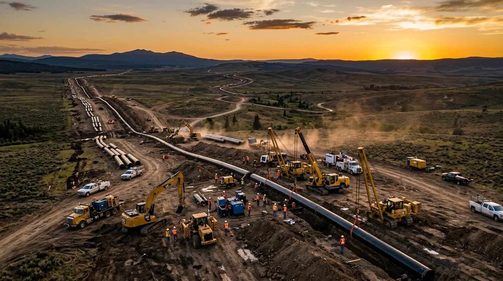

Pipeline projects
Track construction activities, installation progress, and segment-level updates.
 भारत सरकार
|
Government of India
|
Ministry of Petroleum & Natural Gas
भारत सरकार
|
Government of India
|
Ministry of Petroleum & Natural Gas
UNNATI captures site updates, identifies the relevant L5/L6 activity, and records verified progress for infrastructure project teams.
The challenge
Master schedules in Primavera or MS Project define L5/L6 activities. Site progress is received through reports, spreadsheets, diaries, and supervisor updates that vary in format and terminology.
UNNATI understands that this field update may refer to the planned activity “Erect Line 24-XX”, then links it with a confidence score for review.

Who we are
UNNATI is a prototype from Team Pragati for Oil India Limited. It connects unstructured execution updates with the baseline schedule so project information can be captured, checked, and used.
Where it fits
Track construction activities, installation progress, and segment-level updates.
Coordinate civil, mechanical, piping, and commissioning progress in one record.
Give planners a shared view when teams report using different terminology.
Core functions
The system connects field reporting with baseline activities and gives planners control over uncertain matches.
Read daily reports and discipline spreadsheets, with OCR and ASR ready as future extensions.
Let supervisors type or speak a natural update instead of completing rigid forms.
Connect loose descriptions to L5/L6 activities and flag uncertain matches for planners.
Record dates, confidence, audit history, and structured memory for future analytics.
Process
UNNATI extracts activity details, proposes a schedule link, and routes low-confidence results for planner review.
Report progress in natural language or upload a daily file.
Identify activity, date, discipline, and status.
Find the closest L5/L6 baseline activity.
Route uncertain matches to the planner queue.
Store the verified outcome for analytics and reuse.

Operational value
The prototype makes site progress traceable, reviewable, and available for project reporting and future analysis.